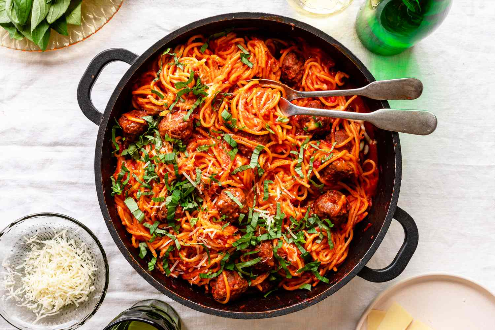

Spaghetti

Description
Week nights can be hectic and coming up with dinner ideas may just be as exhausting as trying to make it. This Italian classic is a
staple in my household. Easy, flavorful, and super affordable. Double the recipe and you've got yourself a crowd-pleasing potluck dish.
Tender pasta tossed in a garlicky, zesty marinara sauce, paired with juicy, herbacious meatballs, finished with fresh basil and fruity oilve oil.
Ingredients
Marinara Sauce & Pasta
- 1 box (16 ounces) Spaghetti Pasta
- 1 can (28 ounces) San Marzano Tomatoes
- 5 Garlic Cloves
- 1 Medium Yellow Onion
- 2 tbsp Extra Virgin Olive Oil
- 1 tsp Red Pepper Flakes
- 1 Parmesan Rind
- Salt
- Pepper
Meatballs
- 1 lb (16 ounces) Ground Beef
- 1/4 cup (50 grams) Freshly Grated Parmesan Cheese
- 1 tbsp Lemon Zest
- 2 Glaric Cloves
- 1/4 cup (50 grams) Italian Flat Leaf Parsley
- 1/4 cup (50 grams) Seasoned Bread Crumbs
- 1 Egg
- Salt
- Pepper
Let's Start Cooking
Getting lost in the sauce...
- In a larget pot, heat olive oil over medium heat until it shimmers.
- Dice one medium yellow onion and add it to the pot. Sweat and saute until transluscent, about 8-10 minutes.
- Roughly chop garlic cloves and add it to the pot along with the pepper flakes. Saute for another 3-5 minutes.
- Add the can of tomatoes and lightly crush them with a wooden spoon.
- Drop the parmesan rind and turn down the heat to medium-low.
- Season with salt and pepper to taste.
- Let simmer for as long as possible, 30 minutes minimum.
Let's get beefy with it...
- In a large bowl, add the beef, cheese, egg, and bread crumbs.
- Zest the lemon, being carfeul you don't zest too far down to the pithe (the white part) - add it to the bowl.
- Mince or finely chop two garlic cloves, adding it to the mix - repeat with the parsley.
- Add a large pinch of course Kosher Salt as well as a few grinds of fresh pepper.
- Mix all the ingredients together, until everything is well combined. Don't over mix or the meatballs will be tough.
- Form the meat into 1 inch balls and set aside.
- In a large skillet, add olive oil.
- Once the oil is shimmering, not smoking, add meatballs. Careful to not over-crowd the pan, as the meatballs will start steaming, not searing.
- Develop a golden crust on all sides and remove the meatballs from the skillet, setting aside.
Mixing and mingling...
- Add all the meatballs to our marinara sauce.
- Let the sauce and meatballs mingle and continue simmering for another 15 minutes.
The home stretch...
- Cook the pasta according to box directions.
- Drain and add the spaghetti to the sauce.
- Toss everything together.
- Finish the dish with a drizzle of Extra Virgin Olive Oil, Freshly grated Parmesa cheese, and chopped Basil.
- Enjoy!